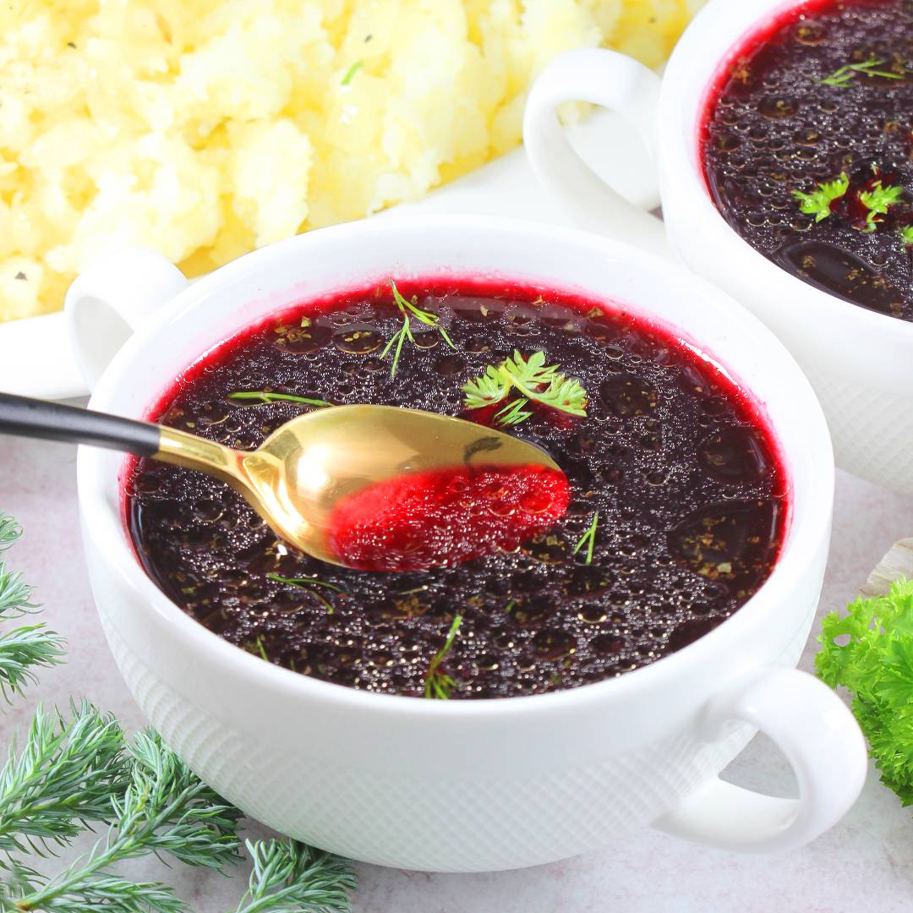

Pogo's Authentic Homemade Barszcz (Borscht)

Introduction
Barszcz is a prototypical Christmas Eve dish. I never liked it myself, but it's wildly popular with people who aren't me.
Preparation time: Around 3.5 hours (this includes two hours to cook the broth, and an hour for the barszcz).
Portion amount: 1.7L of barszcz
Calorie content: 50kcal per 100ml of barszcz
Ingredients
Ingredients for Barszcz
- 2 liters of vegetable or poultry broth
- 1 kg of red beets
- 2 cloves of garlic
- 2 dried mushrooms
- a teaspoon each of marjoram and sugar, a tablespoon of vinegar, and salt and pepper to taste
Preparing the Barszcz
- Wash all the vegetables under cold running water. Peel two medium carrots, a parsley root and a piece of
celery and place them in the pot. Also place parsley, washed and cut into smaller pieces celery stalks,
unpeeled garlic cloves in the pot. Cut the onion in half and toast it for a while in a dry pan or over
the burner of a gas stove.
- Add 2 more bay leaves, 4 grains of allspice, a teaspoon of peppercorns and a tablespoon of salt.
Pour three liters of water into the pot. Cover the pot with a lid and place it on the burner.
Set the power higher so that the broth boils quickly. If necessary, remove the scum (cut whites)
and then reduce the power of the burner to a minimum and cook the soup like this for another two hours.
- After this time, strain the broth itself. You can use the rest of the broth and the vegetables and meat,
for example, to make another soup. You can also bake a pate or make a stuffing for pancakes,
dumplings or croquettes.
- Add one kilogram of peeled and sliced beets to two liters of strained broth.
Cut each beet, before adding it to the broth, in half. In turn, cut the halves into thicker slices.
Also place two cloves of garlic and two larger pieces of dried mushrooms in the pot.
You can also throw in one small bay leaf.
- Cover the pot with a lid. Bring the soup to a boil. Once boiling, reduce the power of the burner to such
that the barszcz only gurgles slightly, and cook it for an hour. The beets should be soft.
- Also add a teaspoon of marjoram 10 minutes before turning off the barszcz. After this time, turn off the barszcz.
- Drain the barszcz itself. I always add a teaspoon of sugar, a tablespoon of spirit vinegar (you can replace the vinegar
with lemon juice) and salt and pepper to the cooked barszcz. I dose salt and pepper in a pinch each and check the taste
of the barszcz. I do not specify exactly how much salt and pepper to add. Each bouillon has a slightly different taste
and spiciness. It is also a matter of individual taste.
- Serve the finished barszcz hot in bouillon dishes. Red barszcz can be served with a little parsley or dill.
I recommend boiling potatoes. I still garnish the potatoes with onions fried in oil.
Tip: The beets taken out of the barszcz can still be grated and roasted.
After all, it's a shame to throw them away and you can still make a pretty decent dinner side dish out of them.
Such beets no longer have as much flavor as boiled or roasted with the skin, but with proper seasoning they will
be quite tasty.
- Red barszcz can also be whipped with 18% sour cream. You should then be very careful that the cream does not turn sour.
It must be tempered by pouring a large amount of boiling barszcz from the pot into the glass with the cream.
The tempered cream should be poured very slowly into the soup pot. Bring to a boil and turn off.
Croquettes are an interesting addition to barszcz. I recommend trying them out.
And that's it!
Congratulations! Enjoy your well-earned Barszcz.
Go back to the Recipe List